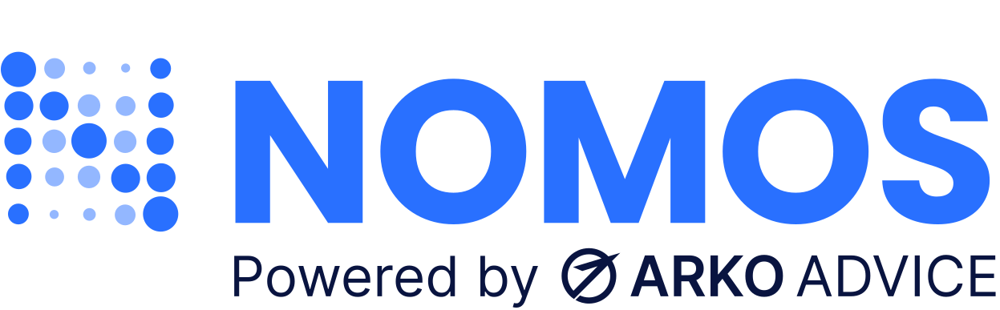
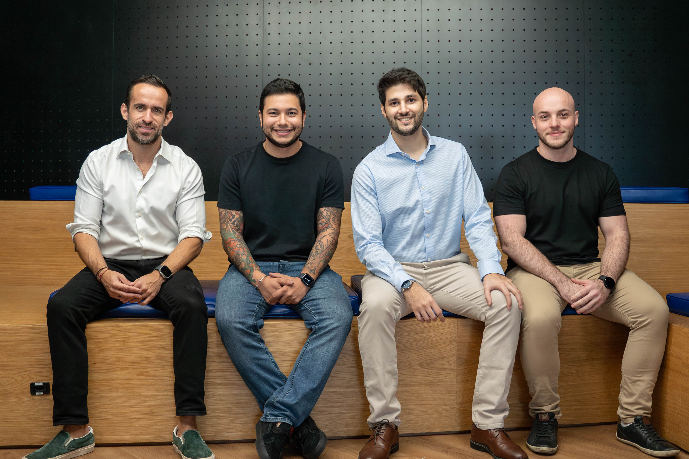
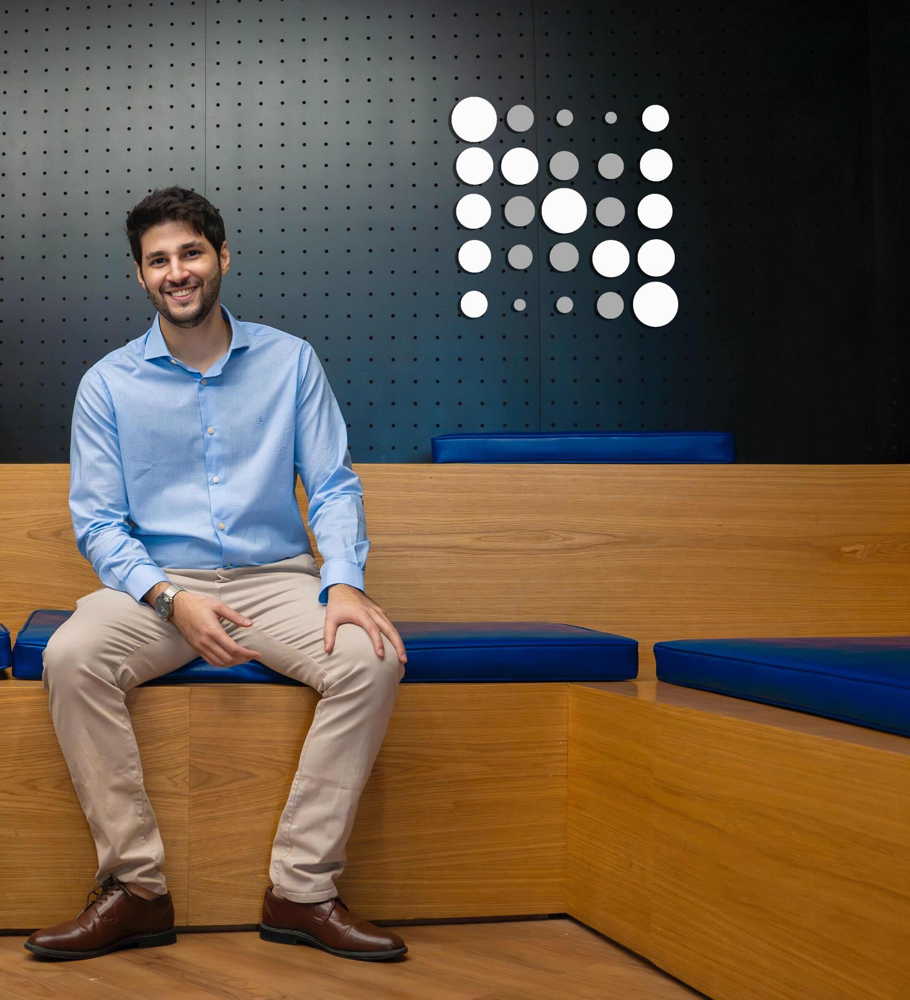

About the company
Based in São Paulo, Brazil, Nomos is a platform for centralized, practical and organized monitoring of information from executive and legislative branches nationwide (Brazil).

Responsibilities
Co-founded Nomos in partnership with Arko Advice and Traders Club, securing a $5 million investment to build a platform for centralized and practical monitoring of executive and legislative information across Brazil.
Designed and implemented a highly efficient technical infrastructure capable of collecting and processing nationwide data, delivering real-time alerts to users in under 1 minute, significantly outperforming competitors (5–15 minutes).
Directed the end-to-end product development lifecycle, from concept to go-to-market strategy, ensuring a successful launch and aligning the platform with user needs and market demands.

Principal outcome
Built Nomos from zero — from early concept to a fully operational platform backed by a $5M investment from TC (Traders Club). Led the full technical and product lifecycle: architecture design, team building, and go-to-market execution. The result was a system that delivered government monitoring alerts to users in under 1 minute, compared to the industry standard of 5–15 minutes.
By listening closely to user needs and iterating rapidly, Nomos became the preferred solution for monitoring Brazil’s executive and legislative activity. Competitors struggled to match both the speed and depth of the platform — a direct result of intentional architectural decisions made early, prioritizing real-time performance and scalability from day one.
Featured Media
Interviews and podcasts where I've shared insights on technology, leadership, and entrepreneurship.

Nomos — Monitoring Executive & Legislative Branches
A deep dive into building Nomos, a platform for real-time monitoring of Brazil's executive and legislative activity — from technical architecture to go-to-market.

Technology in Institutional & Government Relations
A conversation on how technology is reshaping institutional and government relations — and the role platforms like Nomos play in that transformation.
Projects & Code Contributions
Discover the repositories highlighting the technical solutions and innovations I spearheaded during my time at Nomos.
Docker ECR Python Selenium
This Docker image was built upon the ECR Lambda Python Image with the objective of have selenium and its dependencies installed for webscraping purpose. Github
AWS Serverless Webscraping
This is a basic project to collect data from a web page and save the information in a MongoDB database. Github